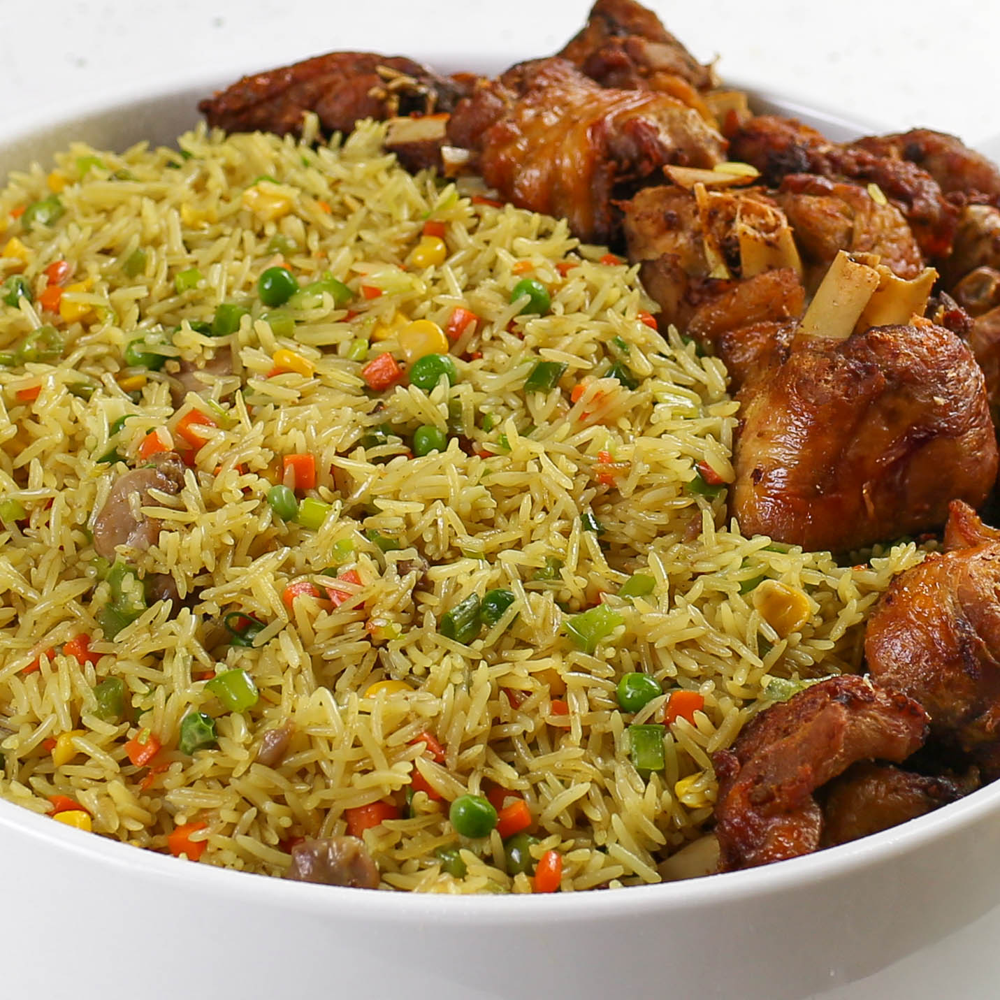

Fried-rice

Delicious Homemade Fried-Rice
Fried rice is a flavorful and versatile dish that originated in Asia and has become a global favorite. It's typically made using leftover rice, which is stir-fried with vegetables, eggs, and a savory blend of seasonings like soy sauce. Quick to prepare and endlessly customizable, fried rice is perfect for a satisfying lunch or dinner when you want something both simple and delicious.
In this recipe, fluffy day-old rice is tossed with sautéed vegetables, scrambled eggs, and a splash of soy sauce to bring it all together. Whether you’re using pantry staples or adding proteins like chicken, shrimp, or tofu, fried rice is a great way to use up leftovers and turn them into something crave-worthy. It's a complete meal in one pan!
Ingredients
- 2 cups cooked rice (preferably day-old)
- 2 tablespoons vegetable oil
- 2 eggs, beaten
- 1 cup mixed vegetables (peas, carrots, corn)
- 2 green onions, chopped
- 2–3 tablespoons soy sauce
- 1 teaspoon sesame oil (optional for extra flavor)
- Salt and pepper to taste
Steps In Making Fried-Rice
- Heat 1 tablespoon of vegetable oil in a large skillet or wok over medium-high heat.
- Add the beaten eggs and scramble until fully cooked. Remove from the pan and set aside.
- In the same pan, add the remaining 1 tablespoon of oil and sauté the mixed vegetables for 2–3 minutes until tender.
- Add the cooked rice to the pan and stir-fry, breaking up any clumps and mixing it well with the vegetables.
- Return the scrambled eggs to the pan and mix them into the rice.
- Pour in the soy sauce and optional sesame oil, then stir well to coat everything evenly.
- Season with salt and pepper to taste.
- Cook for another 2–3 minutes, stirring occasionally, until the rice is heated through and slightly crispy.
- Garnish with chopped green onions and serve hot.
Home